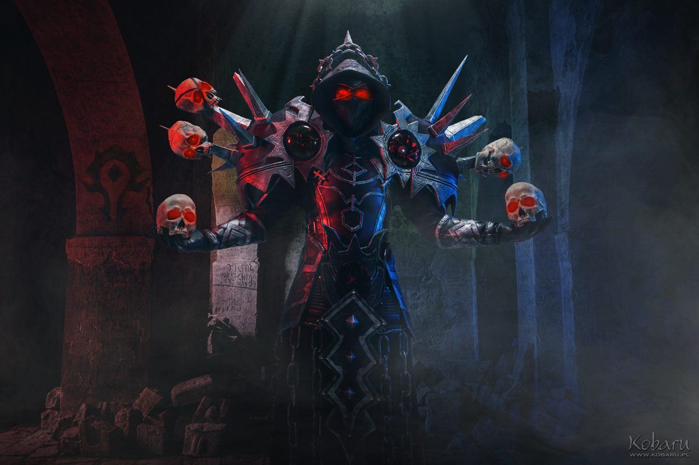

В древние времена, на землях Азерота, процветала эпоха великих магов и могущественных колдунов. Среди них выделялся один - Варлок. Его происхождение окутано тайной, а его сила превосходила представление об обычных магах.
Варлок стремился к знанию, недоступному обычным людям. Он искал тайные знания в самых темных уголках мира, погружаясь в древние свитки и разгадывая запретные тайны. Его амбиции знали границы лишь в его собственном воображении.
Но с каждым шагом к могуществу, Варлок погружался все глубже во тьму. Его душа становилась все более окаменелой и лишенной света. Он обрел силу, но потерял свою человечность.
Наконец, Варлок достиг вершины своего магического пути, став мастером темной магии. Он обрел способность призывать демонов и манипулировать тьмой как никто другой. Но эта сила имела свою цену - он был проклят тем, что он так стремился овладеть.
Так началась легенда Варлока, чье имя стало символом ужаса и разрушения. Он стал не только мастером темной магии, но и ее учителем, распространяя свое зловещее влияние по всему миру. Его последователи, Варлоки, восхищались его силой и искали его благословения в своих черных ритуалах.
Таким образом, Варлок взошел на вершину магической иерархии, но его цена была высока. Его сила привела к разрушению его собственной души, оставляя его обреченным на вечные муки и одиночество.
Жил был прото паладин
Он всегда вайпался на треше в ЦЛК
Гулдан дал ему прибухнуть темного пива с скверны
И почуствовал Adwinit с будуна "Сила во тьме, сила внутри."
Стих о маге тьмы Adwinit
Средь темных сил и магии злой,
Властелин тьмы, волшебный страж.
Варлок, властью демонов славен,
Под светлым небом мира дряхл.
В его власти лежат миры два,
И тенью души он играет.
Его мощь - безгранична сила,
Но вечно в сердце огонь пылает.
Варлок, упиваясь властью тьмы,
Стремится к граням неведомым.
Он владыка беспощадный,
Сердце его - сталь нечистым.
Так песня о варлоке звучит,
В мире, где силы и судьбы сплетут.
Из глубин тьмы он поднимается,
И страх в сердцах людей завивает.
Услуги Adwinit
Вайпнуть рейд в 25хм
Не вынести осквернение на личе
Заагрить треш в Рс
Попрошайничать в Даланаре
Афкшить на Бг
Занести на синдре глыбу в рейд
Спрыгнуть с кораблей в начале боя
Гонять кабанчико по дуратару

Вспомни в чем сила
Варлок Adwinit, во тьме великий,
Словно бог, властью одарен.
Мечет молнии, вызывает страх,
Всех он победит, в этой темной схватке.
Варлок Adwinit, властелин страха,
Свирепый в битве, безжалостный.
Тьма его арена, а смерть — игра,
Убивает всех, кто смел ему встать.
Adwinit, во тьме грозный вождь,
Смертью пишет он свой закон.
Тьма его щит, а магия меч,
Никто не спасется от его речи.
Варлок Adwinit, властный в тьме,
Смертью пляшет, как танцор ночи.
Магия пламени, демонов рев,
Непобедим, его власть над всем.